A USGS National Map NAIPPlus
exportImage per tile, Web Mercator bbox, no tile cache at z17–18

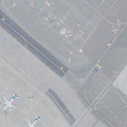


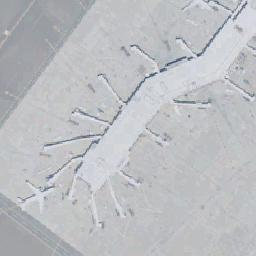

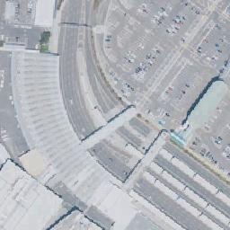
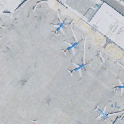

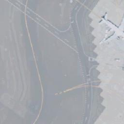
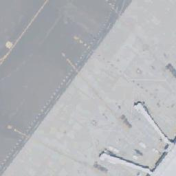
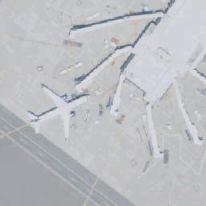
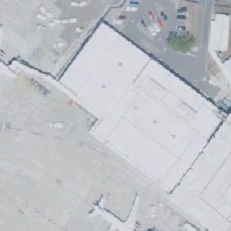
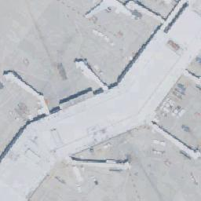
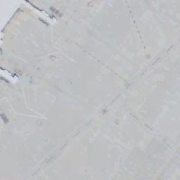
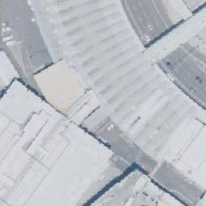
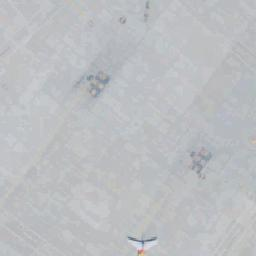
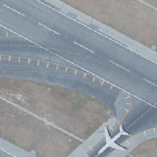
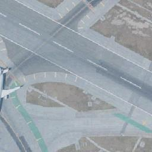
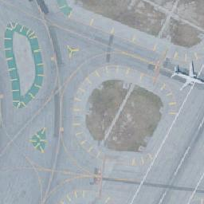
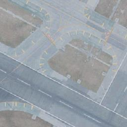
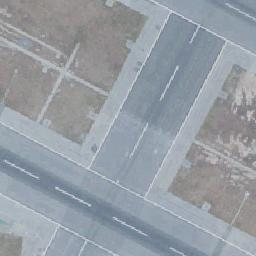
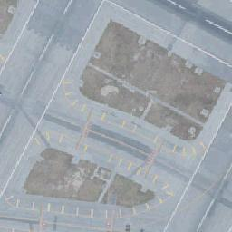
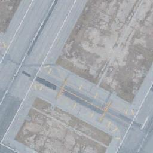
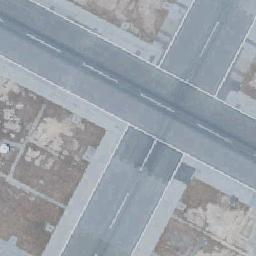
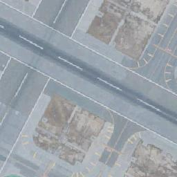
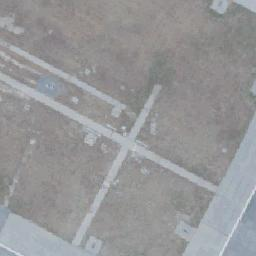
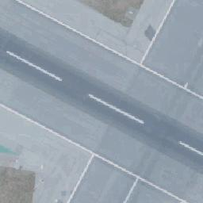
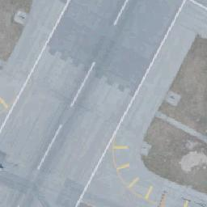
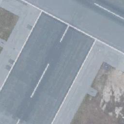
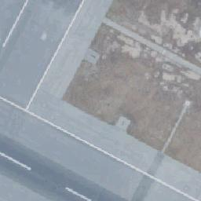
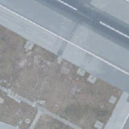
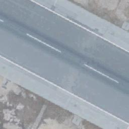
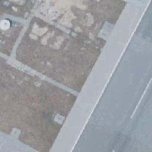
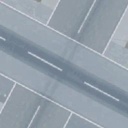
Terms: public domain, no key, no stated rate limit; credit line “Map services and data available from U.S. Geological Survey, National Geospatial Program.” Coverage: US only (CONUS, AK, HI, PR, territories).
B Esri World Imagery
cached XYZ tiles, MapServer/tile/{z}/{y}/{x}
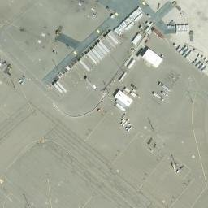
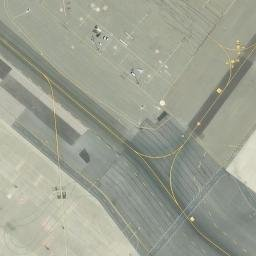
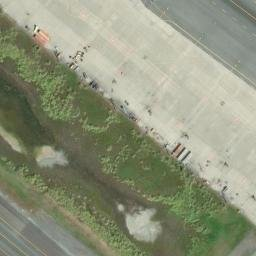
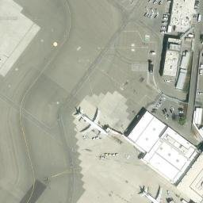
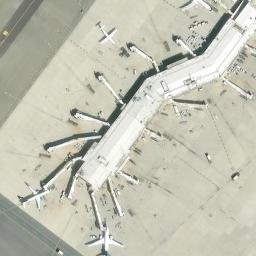
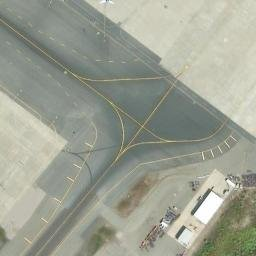
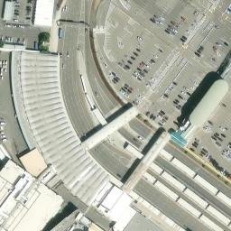
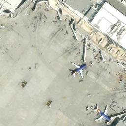
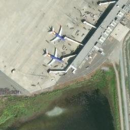
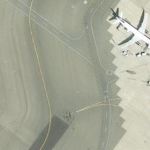
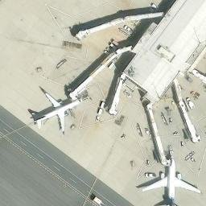
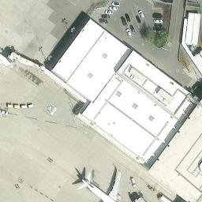
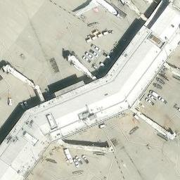
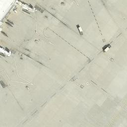
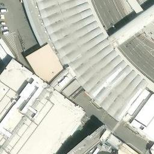
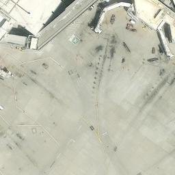
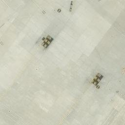
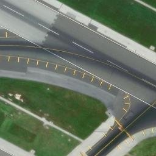
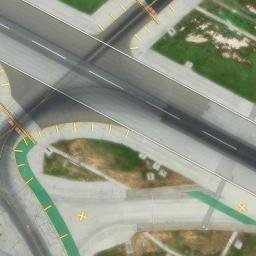
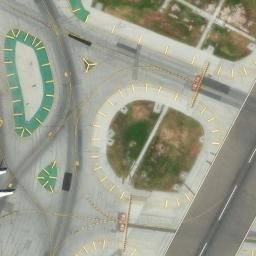
Terms: Esri Master License Agreement; shipping needs an ArcGIS Location Platform account and API key (free tier 2M tiles a month), “Powered by Esri” and data credits always on the map, and no shipped or bulk-harvested tiles. Coverage: worldwide.